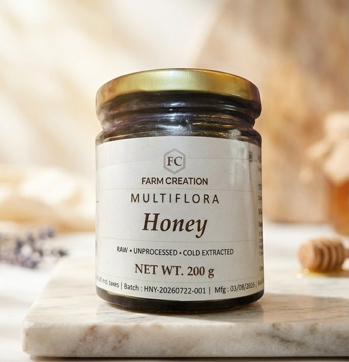
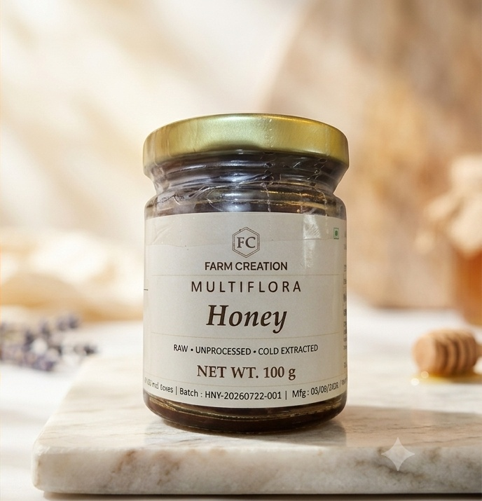

Raw
Honey in its natural form, with its naturally occurring character.
Multiflora honey · Farm Creation
As honey bees move from bloom to bloom, nectar from many flowering plants comes together in one naturally distinctive honey.

Multiflora honey carries the character of more than one blossom.
Honey bees gather nectar from flowering plants in their surroundings. The mix of flowers gives each harvest its own combination of flavour, aroma and colour. The result is honey shaped by the floral world the bees have visited.
That is the simple idea at the heart of Farm Creation: let the many-flower character of the honey speak for itself.
Meet the bee behind the honeyThe species named on the jar
Known for producing honey, this bee visits a range of flowering plants. As it gathers nectar, it also carries pollen back to the hive. Farm Creation’s product profile names Apis mellifera as the bee species behind its multiflora honey.
A changing mix of flowers. A familiar honey bee. A character all its own.
Farm Creation Multiflora Honey is presented raw, unprocessed and cold-extracted, with naturally occurring bee pollen.
Honey in its natural form, with its naturally occurring character.
One ingredient: 100% pure raw multiflora honey. No additives or preservatives.
Gently extracted without heat-based processing, as described in the product catalogue.
Naturally contains bee pollen
Pollen is part of the honey’s naturally occurring character.

Stir a spoonful into tea. Drizzle it over breakfast. Pair it with pancakes or toast, or use it in a homemade recipe.
Honey may crystallize naturally over time. Store in a cool, dry place away from direct sunlight; do not refrigerate. Not recommended for infants under 12 months.
Every jar brings the same multiflora honey to the table.
Both formats come in premium glass jars.
Bring Farm Creation to your shelves
Farm Creation welcomes enquiries from retailers, supermarkets, distributors, wholesalers, hotels, restaurants and corporate buyers.